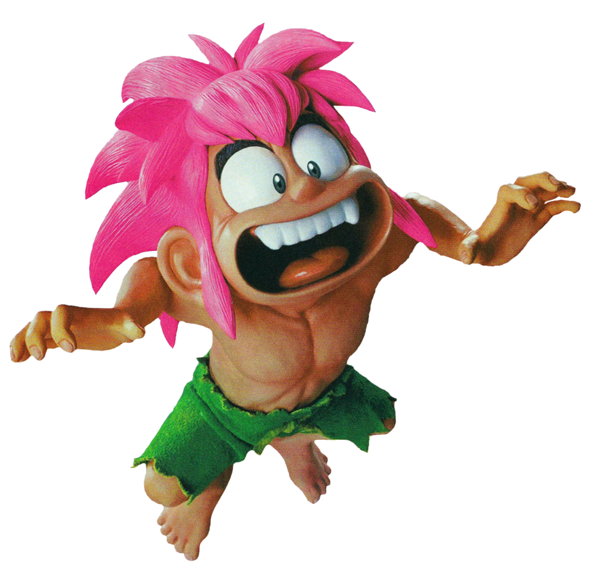

About Tomba
Tomba is a sweet dude. I first met him on a PlayStation demo disc when I was six years old. He can run, jump, and throw things, and he is on a quest to defeat the evil Koma pigs.
Tomba is a feral child.
Interesting things about Tomba
- He can jump on the back of his enemies.
- He uses fruit to replenish his health bar.
- I like him a lot.
Tomba's friends
Tomba has many people who help him out on his quest. He seeks the counsel of a 100 year old wise man. His grandfather had left him a bracelet, which the evil pigs stole from him, and he must retrieve it. Click on some of these links to learn about the characters in his journey.